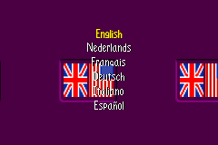

Sims, The - Bustin' Out (USA) (En,Fr,De,Es,It,Nl) (Rev 1)
EEPROM 64K Save Format Spec gbakit Built-In 📺 Joybus 💾 MultiBoot 🎮 4P Link
Cartridge Identity
- Game Code
ASIE(FamilyASI)- Header Title
THE SIMS ADV- Maker / Revision
69/ rev1- ROM Size
- 16.0 MiB (16,777,216 B)
- Save Media
EEPROM 64K- SHA-256
c1fc9976b968336f7f65ba8a13d5e796e41908d047ee1aa6b247ca4222e76427- Engine / SDK Group
comm-006(66 families)
Screenshots


Link Cable & Multiplayer Communications
This title contains detected communication capabilities: 📺 Joybus 💾 MultiBoot 🎮 4P Link.
Detailed protocol specifications, SIO registers, Joybus commands, and MultiBoot sequences are documented in the Link & Multiplayer Reference.
- Multi-Player SIO (4P)
- 16-bit ring network · SIOCNT (
0x04000128) literals:0x03d690,0x03d74c,0x03d81c· SIODATA32/SIOMULTI0 (0x04000120) literals:0x03db5c,0x03dc40,0x03dcbc - GameCube Joybus
- Register literal
REG_JOYCNT(0x04000140) at offset0x01c528 - GameCube Joybus
- Register literal
REG_JOY_RECV(0x04000150) at offset0x01c52c - GameCube Joybus
- Register literal
REG_JOY_RECV(0x04000150) at offset0x01c9f0 - GameCube Joybus
- Register literal
REG_JOY_TRANS(0x04000154) at offset0x01c5e8 - GameCube Joybus
- Register literal
REG_JOY_TRANS(0x04000154) at offset0x01c638 - GameCube Joybus
- Register literal
REG_JOYSTAT(0x04000158) at offset0x01c530 - GameCube Joybus
- Register literal
REG_JOYSTAT(0x04000158) at offset0x01c57c - Single-Cart MultiBoot
- Single-Cartridge MultiBoot (Download Play) client/server handler · Thumb SWI 0x25 (
0xDF25):0x0eefc4,0x138528,0xa4ba12,0xd9a158
Battery Save Format Specification
Open Full Save Format SpecDownload Sample .sav (8,192 B)Download save-format.json
- Specification Coverage
- 13 mapped fields · 2 verified checksum(s) · Confidence: MEDIUM
- gbakit Built-In Support
- Built-in (ASIE)
- Emulator Verification
- Checksum enforced: Yes · Repaired save accepted: Yes
gbakit save verify ASIE save.sav
gbakit save decode ASIE save.sav
gbakit save fix ASIE damaged.sav -o repaired.savObserved Battery Save Layout
- Fill Byte & Active Size
0xFFfill · 175–175 / 8,192 B active (entropy 0.51 bits/B)- Active Offset Ranges
0x0–0xD,0xF–0x37,0x808–0x82F,0x1000–0x1027,0x17F8–0x181F(5 total)- ASCII Magic / Headers
0000EISA- Observed Variable Regions
- 2 bytes across 2 spans:
0x8,0xC - Candidate Checksum/Counter Spans
0x8,0xC- Integrity Check
- Confirmed at
0x8
Asset Map (formatkit.asset-map.v1)
Download ASIE-r1-c1fc9976b968336f.asset-map.json.gz (419,863 B (410.0 KiB)) Verified PASS · 14.26% coverage
| Metric | Bytes / Value | Entries |
|---|---|---|
| Identified | 2,249,010 B (2.14 MiB) (13.41%) | 4,180 |
| Mapped | 0 B (0.00%) | 0 |
| Opaque | 143,347 B (140.0 KiB) (0.85%) | 1 |
| Unknown | 14,384,859 B (13.72 MiB) (85.74%) | 4,080 |
| Total ROM Size | 16,777,216 B (16.00 MiB) | 8,261 |
| Coverage % | 14.26% | — |
| Entries w/ Code Refs | 4,506 / 8,261 (54.55%) | — |
Top Identified Formats: audio.krawall-sample (467 · 2,104,576 B (2.01 MiB)) · gfx.gba-palette (3,706 · 143,552 B (140.2 KiB)) · compress.bios-rle (6 · 690 B) · gba.rom-header (1 · 192 B)
Largest unknown Extents (Headerless / Custom Asset Candidates)
| Offset | Size | Shannon Entropy | Code Refs |
|---|---|---|---|
0x00D54616 | 2,656,759 B (2.53 MiB) | 7.713 bits/B | 1 |
0x009339DC | 2,182,710 B (2.08 MiB) | 7.440 bits/B | 0 |
0x0008FE34 | 262,720 B (256.6 KiB) | 6.061 bits/B | 0 |
0x001520E0 | 84,152 B (82.2 KiB) | 7.739 bits/B | 0 |
0x00142A18 | 63,144 B (61.7 KiB) | 7.659 bits/B | 0 |
gzip -dk ASIE-r1-c1fc9976b968336f.asset-map.json.gz && gbakit map verify rom.gba ASIE-r1-c1fc9976b968336f.asset-map.json
gbakit assets export rom.gba --asset-map ASIE-r1-c1fc9976b968336f.asset-map.json -o out/Text, Fonts & Scene Data
- Primary Text Encoding
- 16-bit / UTF-16LE text (
13ASCII strings ·1Shift-JIS runs) - Font & VWF Indicators
- VWF Width Table 1bpp Font · BIOS SWIs: BitUnPack
0x10:4· LZ770x11/12:14· Huffman0x13:2· RLE0x14/15:5 - Scene & Packaging
54ROM pointer tables (≥32 entries,2≥200) ·633relativeu32TOCs ·260OAM metasprite hits
Hardware MMIO Subsystems
ppu_display0x8000618,0x800d3b0,0x800d564
Regional Variants & Revisions (Family ASI)
- Sims, The - Bustin' Out (USA, Europe) (En,Fr,De,Es,It,Nl) (
ASIE, 16 MiB)